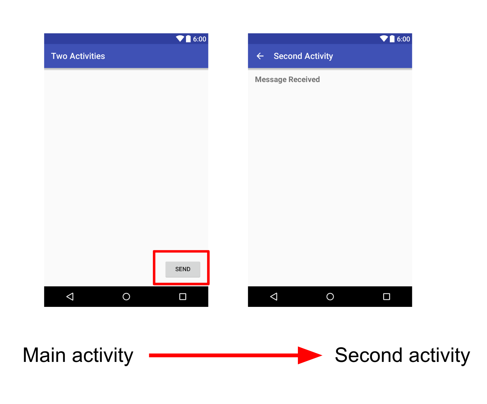
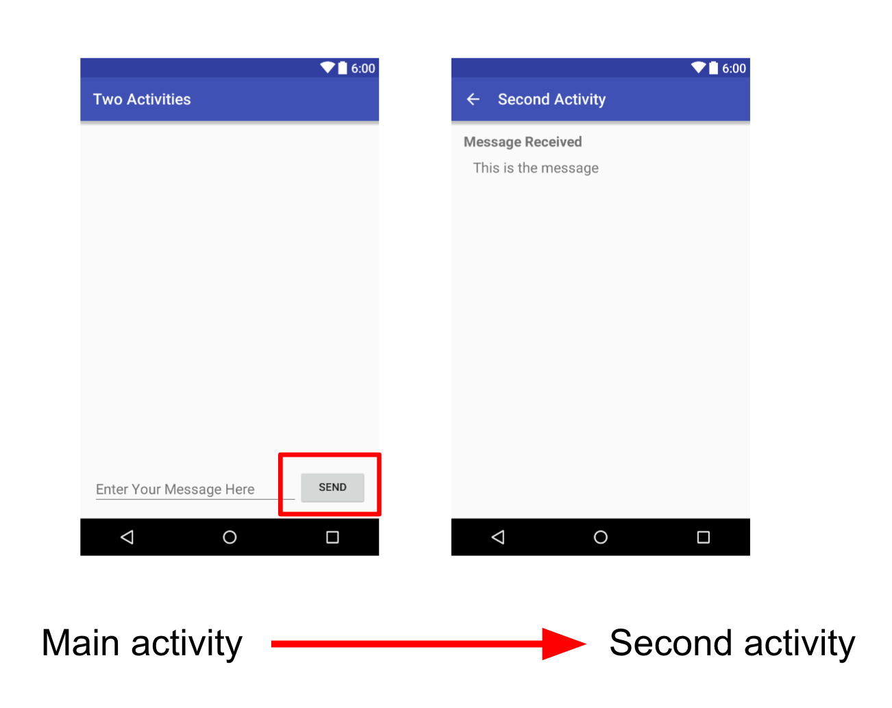
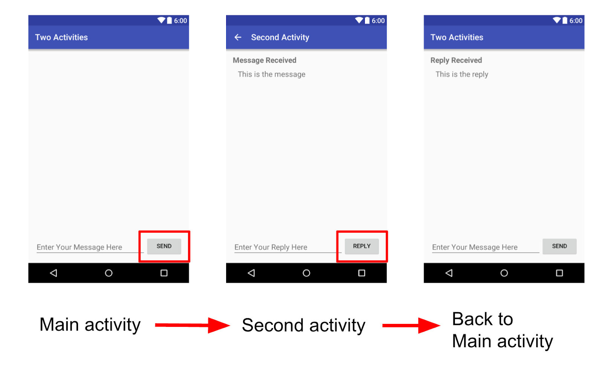
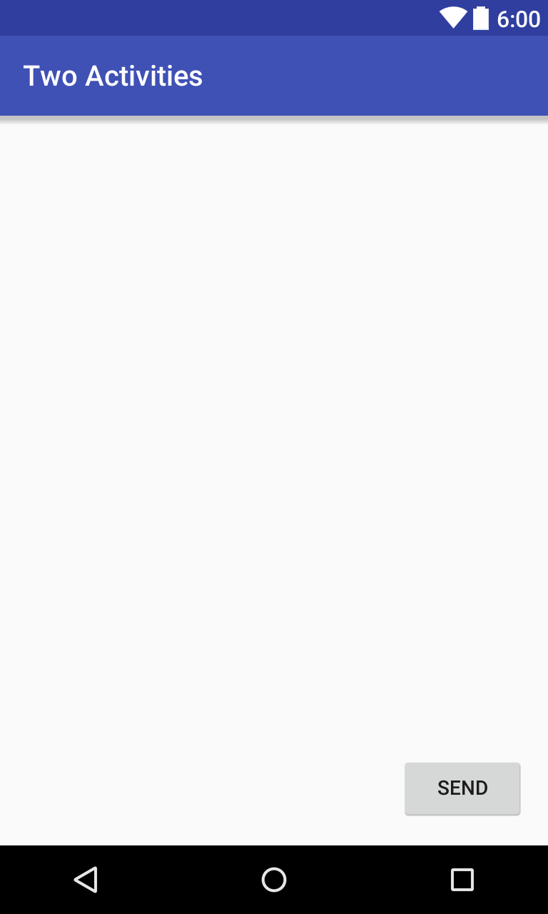
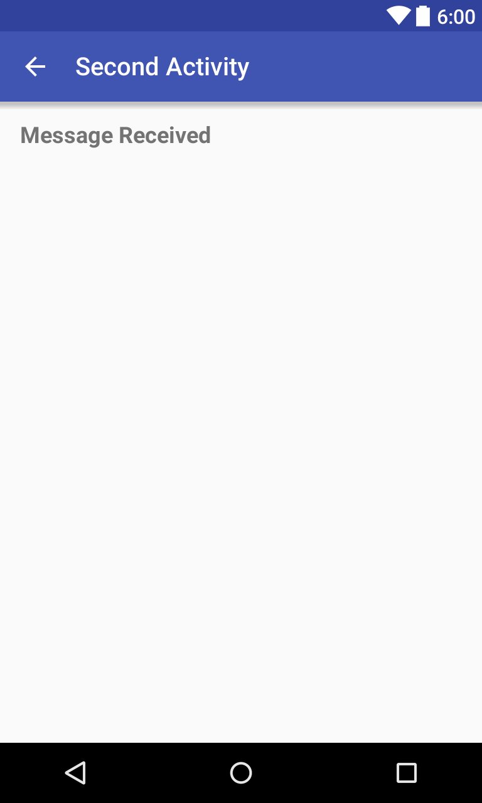
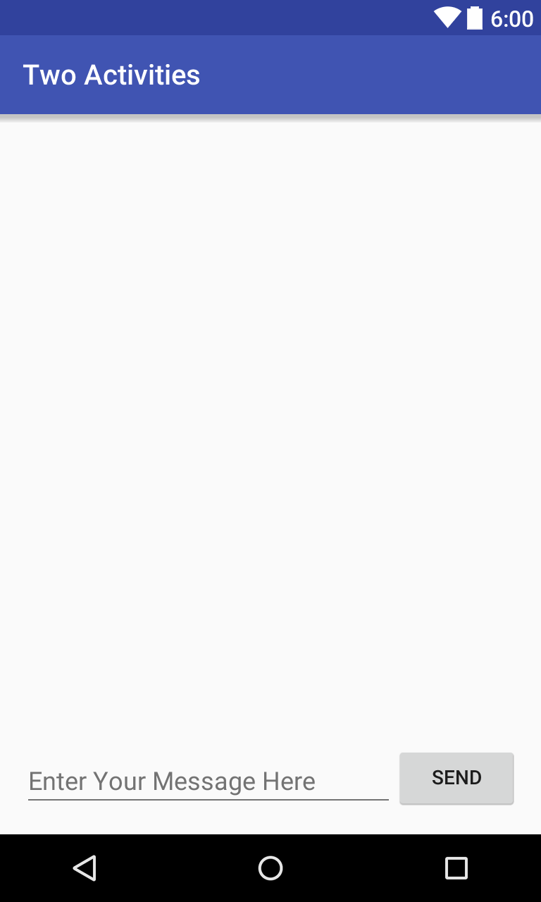
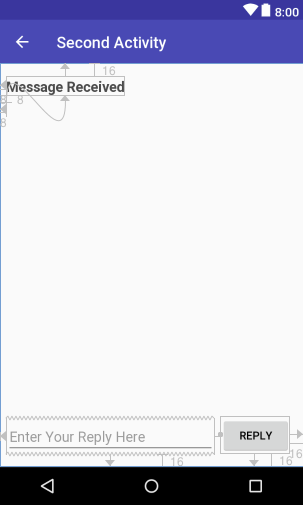
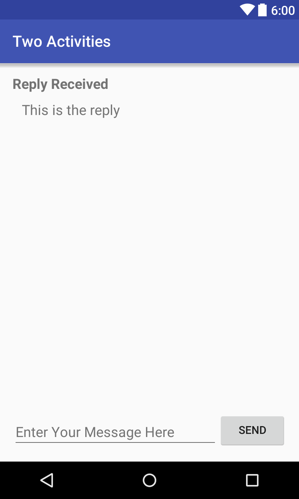

この実践的なコードラボはユニット 1:Android Developer Fundamentals (Version 2) コースの一部です。このコースでは、コードラボを順番に学習することで、このコースを最大限に活用することができます。
- コースのコードラボの完全なリストについては、Codelabs for Android Developer Fundamentals (V2)を参照してください。
- すべてのコンセプトチャプター、アプリ、スライドへのリンクを含むコースの詳細については、Android DeveloperFundamentals (Version 2)を参照してください。
注：このコースでは、「Codelab」と「実践」という用語を入れ替えて使用しています。
序章
クラスの 活動内容は、写真の撮影、電子メールの送信、マップの表示など、ユーザーが1つの集中的なタスクを実行できるアプリ内の1つの画面を表します。アクティビティは通常、フルスクリーン ウィンドウとしてユーザーに表示されます。
アプリは通常、互いにゆるやかに結合された複数の画面で構成されています。各画面はアクティビティです。通常、アプリ内の1つのアクティビティは「メイン」アクティビティ（MainActivity.java）として指定され、アプリの起動時にユーザーに表示されます。メイン アクティビティは、他のアクティビティを開始して、異なるアクションを実行することができます。
新しいアクティビティが開始されるたびに、前のアクティビティは停止しますが、システムはスタック（「バックスタック」）にアクティビティを保持します。新しいアクティビティが開始されると、その新しいアクティビティはバックスタックにプッシュされ、ユーザーのフォーカスを受けます。バックスタックは基本的な「last in, first out」スタックロジックに従います。ユーザーが現在のアクティビティを終了してBackボタンを押すと、そのアクティビティはスタックからポップされて破棄され、前のアクティビティが再開されます。
アクティビティは、意図を持って開始またはアクティベートされます。アクティビティは インテントは非同期メッセージで、他のアクティビティや他のアプリコンポーネントからアクションを要求するためにアクティビティ内で使用できます。インテントを使用して、別のアクティビティからアクティビティを開始したり、アクティビティ間でデータを渡したりすることができます。
インテントには、明示的なものと暗黙的なものがあります。
- 明示的なインテントとは、そのインテントのターゲットが分かっているものです。つまり、特定のアクティビティの完全修飾クラス名がすでにわかっているということです。
- 暗黙的なインテントは、ターゲットコンポーネントの名前は知らないが、実行すべき一般的なアクションがある場合のものです。
この実習では、明示的なインテントを作成します。暗黙的インテントの使用方法については、後で説明します。
すでに知っておくべきこと
できるようになるはずです。
- Android Studio でアプリを作成して実行する。
- レイアウト・エディタを使用してConstraintLayout内のレイアウトを作成します。
- レイアウト XML コードを編集します。
- ボタンにonClick機能を追加する
What you'll learn
- Android Studioで新規アクティビティを作成する方法
- Up ナビゲーションの親アクティビティと子アクティビティを定義する方法
- 明示的なIntent でアクティビティを開始する方法
- 明示的なインテントを使用して各アクティビティ間でデータを渡す方法
What you'll do
- メインアクティビティと2つ目のアクティビティを持つ新しいAndroidアプリを作成する
- メインアクティビティからインテントを使用して2つ目のアクティビティにデータ（文字列）を渡し、そのデータを2つ目のアクティビティに表示します。
- 2番目の異なるビットのデータをメインアクティビティに送信します。
この章では、当然のことながら、2つのActivityの実装を含むTwo Activitiesというアプリを作成し、ビルドします。アプリは3つのステージで作成します。
最初のステージでは、メインアクティビティに送信ボタンが1つ含まれているアプリを作成します。ユーザーがこのボタンをクリックすると、メインアクティビティはインテントを使用して2つ目のアクティビティを開始します。

第2段階では、メインアクティビティにEditTextビューを追加します。ユーザーがメッセージを入力し、[送信] をクリックします。メインアクティビティでは、インテントを使用して2つ目のアクティビティを開始し、ユーザーのメッセージを2つ目のアクティビティに送信します。2 番目のアクティビティは、受信したメッセージを表示します。

2つのアクティビティアプリを作成する最終段階では、2つ目のアクティビティにEditTextとReplyボタンを追加します。これでユーザーは返信メッセージを入力して「返信」をタップすると、メインアクティビティに返信が表示されます。この時点で、インテントを使用して、2つ目のアクティビティからメインアクティビティに返信を受け渡します。

このタスクでは、メインアクティビティを持つ初期プロジェクトをセットアップし、レイアウトを定義し、onClickボタン イベントのスケルトン メソッドを定義します。
1.1 TwoActivities プロジェクトの作成
- Android Studioを起動し、新しいAndroid Studioプロジェクトを作成します。
アプリに「TwoActivities」という名前をつけ、前回の実習で使用したものと同じ「Phone」と「Tablet」の設定を選択します。プロジェクトフォルダは自動的にTwoActivitiesという名前になり、アプリバーに表示されるアプリ名は「Two Activities」になります。
アクティビティのテンプレートに「Empty Activity」を選択します。次へ」をクリックします。- デフォルトの
アクティビティ名（MainActivity）を受け入れます。レイアウト ファイルの生成と後方互換性（AppCompat）オプションがチェックされていることを確認します。 - 完了 をクリックします。
1.2 メイン アクティビティのレイアウトを定義する
- プロジェクト > Android ペイン で res > layout > activity_main.xmlを開きます。レイアウトエディタが表示されます。
- まだ選択されていない場合はデザインタブをクリックし、コンポーネントツリーペインの
テキストビュー（"Hello World"と書かれているもの）を削除します。 - Autoconnect をオンにした状態（デフォルト設定）で、パレットペインから
ボタンをレイアウトの右下隅にドラッグします。オートコネクトは、ボタンの制約を作成します。 - 属性ペインで、ID を button_main に、layout_widthと layout_heightをwrap_content に設定し、Text フィールドにSendを入力します。これでレイアウトは次のようになります。

- TextタブをクリックしてXMLコードを編集します。
ボタンに次の属性を追加します。
アンドロイド:オンクリック="launchSecondActivity"
launchSecondActivity()メソッドがまだ作成されていないため、属性値には赤で下線が引かれています。このエラーは次のタスクで修正します。
- 前回の実践で説明したように、"Send"用の文字列リソースを抽出し、リソースに
button_mainという名前を使用します。
ButtonのXMLコードは以下のようになります。
<ボタン
アンドロイド:id="@+id/button_main"
アンドロイド:レイアウトの幅="ラップコンテンツ"
アンドロイド:レイアウトの高さ="ラップコンテンツ"
android:layout_marginBottom="16dp"
android:layout_marginRight="16dp"
アンドロイド:テキスト="@string/button_main"
アンドロイド:オンクリック="launchSecondActivity"
app:layout_constraintBottom_toBottomOf="おや
app:レイアウト制約Right_toRightOf="おや />
1.3 ボタンアクションの定義
このタスクでは、android:onClick属性のレイアウトで参照したlaunchSecondActivity()メソッドを実装します。
- をクリックしてください。
"launchSecondActivity"を使用しています。 Alt+Enter（Macの場合はOption+Enter）を押し、「MainActivity」の中の「Create 'launchSecondActivity(View)'」を選択します。
MainActivityファイルが開き、Android StudioがlaunchSecondActivity()ハンドラ用のスケルトン・メソッドを生成します。
- launchSecond
Activity()の中に、"Button Clicked!
ログ.d(ログタグ, "ボタンがクリックされました！");
LOG_TAGは赤で表示されます。後のステップでその変数の定義を追加します。
MainActivityクラスの先頭に、LOG_TAG変数の定数を追加します。
プライベート スタティック 締めくくり ひもじログタグ =
主な活動.クラス.getSimpleName();
この定数は、クラス自体の名前をタグとして使用します。
- アプリを実行してください。送信ボタンをクリックすると、Logcatペインに「ボタンがクリックされました！」というメッセージが表示されます。モニターに出力が多すぎる場合は、検索ボックスにMainActivityと入力すると、Logcatペインにはそのタグに一致する行のみが表示されます。
MainActivityのコードは以下のようになります。
パッケージコム.例.アンドロイド.ふたぎょう;
インポートアンドロイド.支持.v7.アプリ.AppCompatActivity;
インポートアンドロイド.オーエス.バンドル;
インポートアンドロイド.活用.ログ;
インポートアンドロイド.視る.表示;
パブリック 級 主な活動 伸びる AppCompatActivity {
内々 スタティック 締めくくり ひもじログタグ =
主な活動.クラス.getSimpleName();
省略した場合は
保護された ボイドオンクリエイト(バンドルセーブインスタンス状態) {
超.オンクリエイト(セーブインスタンス状態);
セットコンテンツビュー(R.割り付け.アクティビティメイン);
公然 ボイド打ち上げ第二行動(ビューみる) {
ログ.d(ログタグ, "ボタンがクリックされました！");
}
プロジェクトに追加した新しいアクティビティは、メインのアクティビティとは別に、独自のレイアウトとJavaファイルを持っています。また、AndroidManifest.xml ファイル内に独自のAppCompatActivityクラスから拡張されます。
アプリ内の各アクティビティは、他のアクティビティとゆるやかに接続されているだけです。ただし、AndroidManifest.xmlファイルでアクティビティを別のアクティビティの親として定義することができます。この親子関係により、Androidは各アクティビティのタイトルバーに左向き矢印などのナビゲーションヒントを追加することができます。
アクティビティは、インテントを使って他のアクティビティ（同じアプリ内や異なるアプリ間で）と通信します。インテントには、明示的なものと暗黙的なものがあります。
- 明示的なインテントとは、そのインテントのターゲットが分かっているものです。
- 暗黙的なインテントとは、ターゲット・コンポーネントの名前を持っていないが、実行する一般的なアクションがある場合のものです。
このタスクでは、独自のレイアウトを持つ2つ目のアクティビティをアプリに追加します。AndroidManifest.xmlファイルを変更して、メインアクティビティを2番目のアクティビティの親として定義します。次に、MainActivityのlaunchSecondActivity()メソッドを変更して、ボタンをクリックしたときに2つ目のアクティビティを起動するインテントを含むようにします。
2.1 2番目のアクティビティの作成
- プロジェクトのアプリフォルダをクリックし、ファイル > 新規作成 > アクティビティ > 空のアクティビティを選択します。
- 新しい
アクティビティにSecondActivity という名前を付けます。Generate Layout FileとBackwards Compatibility (AppCompat)がチェックされていることを確認します。レイアウト名はactivity_secondとして記入します。Launcher Activityオプションはチェックしないでください。 - 完了をクリックします。Android Studioは、新しい
アクティビティのレイアウト（activity_second.xml）と新しいJavaファイル（SecondActivity.java）の両方をプロジェクトに追加します。また、AndroidManifest.xmlファイルも新しいアクティビティを含むように更新されます。
2.2 AndroidManifest.xmlファイルの変更
- マニフェスト > AndroidManifest.xmlを開きます。
- Android Studioが2つ目の
Activity用に作成した
<アクティビティ アンドロイド名=".SecondActivity">>>の
<活動性 アンドロイド名=".SecondActivity"
アンドロイド:ラベル = "第二の活動"
android:parentActivityName=".MainActivity">
アンドロイド名="android.support.PARENT_ACTIVITY"
アンドロイド:値=
"com.example.android.twoactivities.MainActivity" />
label属性は、アクティビティのタイトルをアプリバーに追加します。
parentActivityName属性で、メインのアクティビティが2番目のアクティビティの親であることを示します。この関係は、アプリ内の上向きナビゲーションに使用されます：2番目のアクティビティのアプリバーには左向きの矢印が表示され、ユーザーはメインアクティビティに「上向き」に移動できます。
android:parentActivityName属性と同じことをします-上向きナビゲーションのための2つのアクティビティ間の関係を定義します。なぜなら、android:parentActivityName属性はAPIレベル16以上でのみ利用可能だからです。
- 上記のコードで"Second Activity"の文字列リソースを抽出し、リソース名として
activity2_nameを使用します。
2.3 2番目のアクティビティのレイアウトを定義する
- activity_second.xmlを開き、まだ選択されていない場合はDesignタブをクリックします。
- パレットペインからTextViewをレイアウトの左上にドラッグし、レイアウトの上部と左側に制約を追加します。属性ペインでその属性を以下のように設定します。
属性 | 値 |
|
|
上マージン |
|
左マージン |
|
|
|
|
|
|
|
|
|
|
|
textAppearanceの値は、基本的なフォントスタイルを定義する特別なAndroidテーマ属性です。テーマについての詳細は後のレッスンで学びます。
これでレイアウトは次のようになるはずです。

- TextタブをクリックしてXMLコードを編集し、"Message Received"文字列を
text_headerという名前のリソースに抽出します。 - android
:layout_marginLeft="8dp"属性をTextViewに追加し、古いバージョンのAndroidのlayout_marginStart属性を補完します。
activity_second.xmlのXMLコードは以下のようにします。
xmlns:android="http://schemas.android.com/apk/res/android"
xmlns:app="http://schemas.android.com/apk/res-auto"
xmlns:ツール="http://schemas.android.com/tools"
アンドロイド:レイアウトの幅="match_parent"
アンドロイド:レイアウトの高さ="match_parent"
ツール:コンテキスト="com.example.android.twoactivities.SecondActivity">
<テキストビュー
アンドロイド:id="@+id/text_header"
アンドロイド:レイアウトの幅="ラップコンテンツ"
アンドロイド:レイアウトの高さ="ラップコンテンツ"
android:layout_marginStart="8dp"
android:layout_marginLeft="8dp"
android:layout_marginTop="16dp"
アンドロイド:テキスト="@string/text_header"
android:textAppearance=
"@style/TextAppearance.AppCompat.Medium"
アンドロイド:textStyle="大胆
app:layout_constraintStart_toStartOf="おや
app:layout_constraintTop_toTopOf="おや />
2.4 メインアクティビティにインテントを追加する
このタスクでは、メインアクティビティに明示的なインテントを追加します。このIntentは、送信ボタンがクリックされたときに 2 番目のアクティビティをアクティブにするために使用されます。
- MainActivity を開きます。
launchSecondActivity()メソッドで新しいIntentを作成します。
Intent コンストラクタは、明示的なIntent の 2 つの引数を取ります。 コンテキストと、そのIntent を受け取る特定のコンポーネントを指定します。ここでは、これを コンテキストとして使用し、SecondActivity.class を特定のクラスとして使用します。
意図意図 = 新しい 意図(此れ, セカンドアクティビティ.クラス);
- 新しい
Intent を引数としてstartActivity()メソッドを呼び出します。
メソッドを呼び出します。(意図);
- アプリを実行します。
送信ボタンをクリックすると、MainActivity が Intentを送信し、Android システムがSecondActivity を起動し、画面に表示されます。MainActivityに戻るには、上ボタン（アプリバーの左矢印）または画面下部の戻るボタンをクリックします。
最後のタスクでは、MainActivityに明示的なインテントを追加してSecondActivityを起動しました。また、インテントを使用して、あるアクティビティを起動している間に、あるアクティビティから別のアクティビティにデータを送信することもできます。
インテントオブジェクトは、2つの方法でターゲットアクティビティにデータを渡すことができます。インテントデータは、アクションする特定のデータを示すURIです。インテントを通してアクティビティに渡したい情報が URI ではない場合や、送信したい情報が複数ある場合は、代わりに追加の情報をエクストラに入れることができます。
インテントエクストラは バンドル.バンドルはデータの集合体で、キーと値のペアとして格納されています。あるアクティビティから別のアクティビティに情報を渡すには、送信側のアクティビティからIntent extraBundleにキーと値を入れ、受信側のアクティビティでそれらを再び取り出します。
このタスクでは、MainActivityの明示的なインテントを修正して、追加のデータ（この場合は、ユーザーが入力した文字列）をインテントの追加バンドルに含めるようにします。次に、SecondActivity を修正して、そのデータをインテント・エクストラ・バンドルから取り出し、画面に表示します。
3.1 MainActivity のレイアウトに EditText を追加する
- activity_main.xmlを開きます。
- パレットペインからPlain Text
（EditText）要素をレイアウトの下部にドラッグし、レイアウトの左側、レイアウトの下部、送信ボタンの左側に制約を追加します。属性ペインでその属性を以下のように設定します。
属性 | 値 |
|
|
右マージン |
|
左マージン |
|
下マージン |
|
|
|
|
|
|
|
|
|
| (このフィールドのテキストを削除してください) |
activity_main.xmlの新しいレイアウトは次のようになります。

- テキストタブをクリックしてXMLコードを編集し、"ここにメッセージを入力してください"という文字列を
editText_mainという名前のリソースに抽出します。
レイアウトのXMLコードは以下のようになります。
xmlns:android="http://schemas.android.com/apk/res/android"
xmlns:app="http://schemas.android.com/apk/res-auto"
xmlns:ツール="http://schemas.android.com/tools"
アンドロイド:レイアウトの幅="match_parent"
アンドロイド:レイアウトの高さ="match_parent"
ツール:コンテキスト="com.example.android.twoactivities.MainActivity">
<ボタン
アンドロイド:id="@+id/button_main"
アンドロイド:レイアウトの幅="ラップコンテンツ"
アンドロイド:レイアウトの高さ="ラップコンテンツ"
android:layout_marginBottom="16dp"
android:layout_marginRight="16dp"
アンドロイド:テキスト="@string/button_main"
アンドロイド:オンクリック="launchSecondActivity"
app:layout_constraintBottom_toBottomOf="おや
app:レイアウト制約Right_toRightOf="おや />
<編集テキスト
アンドロイド:id="@+id/editText_main"
アンドロイド:レイアウトの幅="0dp"
アンドロイド:レイアウトの高さ="ラップコンテンツ"
android:layout_marginBottom="16dp"
android:layout_marginEnd="8dp"
android:layout_marginStart="8dp"
アンドロイド:エムエス="10"
アンドロイド:ヒント="@string/editText_main"
アンドロイド:inputType="textLongMessage"
app:layout_constraintBottom_toBottomOf="おや
app:layout_constraintEnd_toStartOf="@+id/button_main"
app:layout_constraintStart_toStartOf="おや />
3.2 Intentエクストラに文字列を追加する
インテントエクストラ は、キー/値のペアを バンドル.バンドルとは、キーと値のペアとして格納されたデータの集合体です。あるアクティビティから別のアクティビティに情報を渡すには、送信側のアクティビティからIntentの余分なバンドルにキーと値を入れ、受信側のアクティビティでそれらを再び取り出す必要があります。
- MainActivityを開きます。
- クラスの先頭に
パブリック定数を追加して、Intentエクストラのキーを定義します。
公開されている スタティック 締めくくり ひもじEXTRA_MESSAGE =
"com.example.android.twoactivities.extra.MESSAGE";
EditTextを保持するためにクラスの先頭にプライベート変数を追加します。
プライベート 編集テキストmMessageEditText;
onCreate()メソッドではfindViewById()を使用してEditTextへの参照を取得し、そのプライベート変数に代入します。
mMessageEditText =ファインドビューバイアイディー(R.偶像.エディットテキストメイン);
launchSecondActivity()メソッドで、新しいIntentのすぐ下にあるEditTextのテキストを文字列として取得します。
文字列伝言 =mMessageEditText.ゲットテキスト().文字列に変換します。();
- その文字列を、
EXTRA_MESSAGE定数をキーに、文字列を値にして、余分なものとしてインテントに追加します。
インテント.putExtra(EXTRA_MESSAGE,伝言);
MainActivityのonCreate()メソッドは以下のようになるはずです。
メソッドは次のようになるはずです。
保護された ボイドオンクリエイト(バンドルセーブインスタンス状態) {
超.オンクリエイト(セーブインスタンス状態);
セットコンテンツビュー(R.割り付け.アクティビティメイン);
mMessageEditText =ファインドビューバイアイディー(R.偶像.エディットテキストメイン);
MainActivityのlaunchSecondActivity()メソッドは、以下のようになるはずです。
公開されている ボイド打ち上げ第二行動(ビューみる) {
ログ.d(ログタグ, "ボタンがクリックされました！");
インテント意図 = 新しい 意図(此れ, セカンドアクティビティ.クラス);
文字列伝言 =mMessageEditText.ゲットテキスト().文字列に変換します。();
意図.putExtra(EXTRA_MESSAGE,伝言);
startActivity(意図);
3.3 SecondActivityにメッセージ用のTextViewを追加する
- activity_second.xmlを開きます。
- 別のTextViewをtext
_headerTextViewの下のレイアウトにドラッグし、レイアウトの左側とtext_headerの下に制約を追加します。 - 属性ペインで新しい
TextView属性を以下のように設定します。
属性 | 値 |
|
|
上マージン |
|
左マージン |
|
|
|
|
|
| (このフィールドのテキストを削除してください) |
|
|
新しいレイアウトは前のタスクと同じように見えますが、新しいTextViewにはテキストが含まれていないため、画面には表示されません。
activity_second.xmlレイアウトのXMLコードは以下のようになります。
xmlns:android="http://schemas.android.com/apk/res/android"
xmlns:app="http://schemas.android.com/apk/res-auto"
xmlns:ツール="http://schemas.android.com/tools"
アンドロイド:レイアウトの幅="match_parent"
アンドロイド:レイアウトの高さ="match_parent"
ツール:コンテキスト="com.example.android.twoactivities.SecondActivity">
<テキストビュー
アンドロイド:id="@+id/text_header"
アンドロイド:レイアウトの幅="ラップコンテンツ"
アンドロイド:レイアウトの高さ="ラップコンテンツ"
android:layout_marginStart="8dp"
android:layout_marginTop="16dp"
アンドロイド:テキスト="@string/text_header"
android:textAppearance=
"@style/TextAppearance.AppCompat.Medium"
アンドロイド:textStyle="大胆
app:layout_constraintStart_toStartOf="おや
app:layout_constraintTop_toTopOf="おや />
<テキストビュー
アンドロイド:id="@+id/text_message"
アンドロイド:レイアウトの幅="ラップコンテンツ"
アンドロイド:レイアウトの高さ="ラップコンテンツ"
android:layout_marginStart="8dp"
android:layout_marginTop="8dp"
app:layout_constraintStart_toStartOf="おや
app:layout_constraintTop_toBottomOf="@+id/text_header" />
3.4 SecondActivityを変更してエキストラを取得し、メッセージを表示する
onCreate()メソッドにコードを追加するためにSecondActivity を開きます。- この
アクティビティをアクティブにしたIntentを取得します。
インテント意図 =ゲットインテント();
MainActivity.EXTRA_MESSAGE静的変数をキーにして、インテントエクストラからメッセージを含む文字列を取得します。
文字列伝言 =意図.getStringExtra(主な活動.EXTRA_MESSAGE);
findViewByID()を使用して、レイアウトからメッセージのTextViewへの参照を取得します。
のテキストビューへの参照を取得します。テキストビュー =ファインドビューバイアイディー(R.偶像.テキストメッセージ);
TextViewのテキストをIntentエクストラからの文字列に設定します。
テキストビュー.セットテキスト(伝言);
- アプリを実行します。
MainActivityにメッセージを入力して送信をクリックすると、SecondActivityが起動してメッセージが表示されます。
SecondActivityのonCreate()メソッドは以下のようになっているはずです。
メソッドは次のようになります。
保護された ボイドオンクリエイト(バンドルセーブインスタンス状態) {
超.オンクリエイト(セーブインスタンス状態);
セットコンテンツビュー(R.割り付け.アクティビティ秒);
意図意図 =ゲットインテント();
文字列伝言 =意図.getStringExtra(主な活動.EXTRA_MESSAGE);
テキストビューテキストビュー =ファインドビューバイアイディー(R.偶像.テキストメッセージ);
テキストビュー.セットテキスト(伝言);
これで、新しいアクティビティを起動してデータを送信するアプリができたので、最後のステップは、2番目のアクティビティのデータをメインのアクティビティに戻すことです。このタスクには、インテントとインテントエクストラも使用します。
4.1SecondActivityレイアウトにEditTextとButtonを追加する
- strings.xml を開き、
Buttonテキスト用の文字列リソースとSecondActivityに追加するEditText用のヒントを追加します。
<文字列 名="ボタン秒">返信
<文字列 名="editText_second">ここに返信を入力してください
- activity_main.xmlとactivity_second.xmlを開きます。
activity_main.xmlレイアウトファイルからEditTextとButtonをコピーし、activity_second.xmlレイアウトに貼り付けます。activity_second.xmlで、Buttonの属性値を以下のように修正します。
古い属性値 | 新しい属性値 |
|
|
|
|
|
|
activity_second.xmlで、EditTextの属性値を以下のように修正します。
古い属性値 | 新しい属性値 |
|
|
|
|
|
|
- XMLレイアウトエディタでreturnReplyをクリックし、
Alt+Enter（Macの場合はOption+Return）を押し、「SecondActivity」の中の「Create 'returnReply(View)'」を選択します。
Android Studio はreturnReply()ハンドラ用のスケルトンメソッドを生成します。このメソッドを次のタスクで実装します。
activity_second.xmlの新しいレイアウトは次のようになります。

activity_second.xmlレイアウト・ファイルのXMLコードは次のようになります。
xmlns:android="http://schemas.android.com/apk/res/android"
xmlns:app="http://schemas.android.com/apk/res-auto"
xmlns:ツール="http://schemas.android.com/tools"
アンドロイド:レイアウトの幅="match_parent"
アンドロイド:レイアウトの高さ="match_parent"
ツール:コンテキスト="com.example.android.twoactivities.SecondActivity">
<テキストビュー
アンドロイド:id="@+id/text_header"
アンドロイド:レイアウトの幅="ラップコンテンツ"
アンドロイド:レイアウトの高さ="ラップコンテンツ"
android:layout_marginStart="8dp"
android:layout_marginLeft="8dp"
android:layout_marginTop="16dp"
アンドロイド:テキスト="@string/text_header"
android:textAppearance="@style/TextAppearance.AppCompat.Medium"
アンドロイド:textStyle="大胆
app:layout_constraintStart_toStartOf="おや
app:layout_constraintTop_toTopOf="おや />
<テキストビュー
アンドロイド:id="@+id/text_message"
アンドロイド:レイアウトの幅="ラップコンテンツ"
アンドロイド:レイアウトの高さ="ラップコンテンツ"
android:layout_marginStart="8dp"
android:layout_marginLeft="8dp"
android:layout_marginTop="8dp"
app:layout_constraintStart_toStartOf="おや
app:layout_constraintTop_toBottomOf="@+id/text_header" />
<ボタン
アンドロイド:id="@+id/button_second"
アンドロイド:レイアウトの幅="ラップコンテンツ"
アンドロイド:レイアウトの高さ="ラップコンテンツ"
android:layout_marginBottom="16dp"
android:layout_marginRight="16dp"
アンドロイド:テキスト="@string/button_second"
アンドロイド:オンクリック="returnReply"
app:layout_constraintBottom_toBottomOf="おや
app:レイアウト制約Right_toRightOf="おや />
<編集テキスト
アンドロイド:id="@+id/editText_second"
アンドロイド:レイアウトの幅="0dp"
アンドロイド:レイアウトの高さ="ラップコンテンツ"
android:layout_marginBottom="16dp"
android:layout_marginEnd="8dp"
android:layout_marginStart="8dp"
アンドロイド:エムエス="10"
アンドロイド:ヒント="@string/editText_second"
アンドロイド:inputType="textLongMessage"
app:layout_constraintBottom_toBottomOf="おや
app:layout_constraintEnd_toStartOf="@+id/button_second"
app:layout_constraintStart_toStartOf="おや />
4.2 2つ目のアクティビティでレスポンスインテントを作成する
2 番目のアクティビティからメインのアクティビティに戻ってくるレスポンスデータは、Intentエクストラで送信されます。この returnIntentを構築し、送信するIntent と同じ方法でデータを入れます。
- SecondActivityを開きます。
- クラスの先頭に、
Intentエクストラのキーを定義するための public 定数を追加します。
public スタティック 締めくくり ひもじエクストラリプライ =
"com.example.android.twoactivities.extra.REPLY";
EditTextを保持するためにクラスの先頭にプライベート変数を追加します。
プライベート 編集テキストmReply;
onCreate()メソッドでは、Intentコードの前にfindViewByID() を使用してEditTextへの参照を取得し、そのプライベート変数に代入します。
mReply =ファインドビューバイアイディー(R.偶像.editText_second);
returnReply()メソッドでは、EditTextのテキストを文字列として取得します。
文字列返事 =mReply.ゲットテキスト().文字列に変換します。();
returnReply()メソッドでは、レスポンス用の新しいインテントを作成します。
Intent オブジェクトを再利用しないでください。返信先 = 新しい 意図();
EditTextからの返信文字列をIntentのエクストラとして新しいインテントに追加します。エクストラはキーと値のペアなので、ここではキーがEXTRA_REPLY、値が返信です。
replyIntent.putExtra(エクストラリプライ,返事);
- レスポンスが成功したことを示すために結果を
RESULT_OKに設定します。その結果をRESULT_OKに設定して、レスポンスが成功したことを示します。活動内容クラスはRESULT_OKとRESULT_CANCELLEDを含む結果コードを定義します。
集合結果(結果OK,返信先);
アクティビティを閉じてMainActivityに戻るためにfinish() を呼び出します。
を終了します。();
SecondActivityのコードは以下のようになるはずです。
公開されている 級 セカンドアクティビティ 伸びる AppCompatActivity {
公然 スタティック 締めくくり ひもじエクストラリプライ =
"com.example.android.twoactivities.extra.REPLY";
二等兵 編集テキストmReply;
省略時には
保護された ボイドオンクリエイト(バンドルセーブインスタンス状態) {
超.オンクリエイト(セーブインスタンス状態);
セットコンテンツビュー(R.割り付け.アクティビティ秒);
mReply =ファインドビューバイアイディー(R.偶像.editText_second);
意図意図 =ゲットインテント();
文字列伝言 =意図.getStringExtra(主な活動.EXTRA_MESSAGE);
テキストビューテキストビュー =ファインドビューバイアイディー(R.偶像.テキストメッセージ);
テキストビュー.セットテキスト(伝言);
公然 ボイド返答(ビューみる) {
ひもじ返事 =mReply.ゲットテキスト().文字列に変換します。();
意図返信先 = 新しい 意図();
返信先.putExtra(エクストラリプライ,返事);
設定結果(結果OK,返信先);
了();
}
}
4.3返信を表示するためのTextView要素の追加
MainActivityには、SecondActivityが送信した返信を表示する方法が必要です。このタスクでは、MainActivityの返信を表示するために、Activity_main.xmlレイアウトにTextView要素を追加します。
このタスクを簡単にするために、SecondActivityで使用したTextView要素をコピーします。
- strings.xmlを開き、返信ヘッダー用の文字列リソースを追加します。
<文字列 名="text_header_reply">受信した返信
- activity_main.xmlとactivity_second.xmlを開きます。
activity_second.xmlレイアウトファイルから2つのTextView要素をコピーし、Buttonの上のactivity_main.xmlレイアウトに貼り付けます。- activity
_main.xmlで、最初のTextViewの属性値を以下のように修正します。
古い属性値 | 新しい属性値 |
|
|
|
|
activity_main.xmlで、2番目のTextViewの属性値を以下のように変更します。
古い属性値 | 新しい属性値 |
|
|
|
|
- それぞれの
TextViewにandroid:visibility属性を追加して、最初は見えないようにします。(画面上に表示されていても、何も内容がないと、ユーザーが混乱することがあります)。
アンドロイド:視認性="見えない
これらのTextView要素は、レスポンスデータが2つ目のアクティビティから渡された後に表示されます。
activity_main.xmlのレイアウトは前のタスクと同じように見えますが、レイアウトに2つの新しいTextView要素を追加しました。これらの要素を不可視に設定しているため、画面には表示されません。
以下は、activity_main.xmlファイルのXMLコードです。
xmlns:android="http://schemas.android.com/apk/res/android"
xmlns:app="http://schemas.android.com/apk/res-auto"
xmlns:ツール="http://schemas.android.com/tools"
アンドロイド:レイアウトの幅="match_parent"
アンドロイド:レイアウトの高さ="match_parent"
ツール:コンテキスト="com.example.android.twoactivities.MainActivity">
<テキストビュー
アンドロイド:id="@+id/text_header_reply"
アンドロイド:レイアウトの幅="ラップコンテンツ"
アンドロイド:レイアウトの高さ="ラップコンテンツ"
android:layout_marginStart="8dp"
android:layout_marginLeft="8dp"
android:layout_marginTop="16dp"
アンドロイド:テキスト="@string/text_header_reply"
android:textAppearance="@style/TextAppearance.AppCompat.Medium"
アンドロイド:textStyle="大胆
アンドロイド:可視性="見えない
app:layout_constraintStart_toStartOf="おや
app:layout_constraintTop_toTopOf="おや />
<テキストビュー
アンドロイド:id="@+id/text_message_reply"
アンドロイド:レイアウトの幅="ラップコンテンツ"
アンドロイド:レイアウトの高さ="ラップコンテンツ"
android:layout_marginStart="8dp"
android:layout_marginLeft="8dp"
android:layout_marginTop="8dp"
アンドロイド:可視性="見えない
app:layout_constraintStart_toStartOf="おや
app:layout_constraintTop_toBottomOf="@+id/text_header_reply" />
<ボタン
アンドロイド:id="@+id/button2"
アンドロイド:レイアウトの幅="ラップコンテンツ"
アンドロイド:レイアウトの高さ="ラップコンテンツ"
android:layout_marginBottom="16dp"
android:layout_marginRight="16dp"
アンドロイド:テキスト="@string/button_main"
アンドロイド:オンクリック="launchSecondActivity"
app:layout_constraintBottom_toBottomOf="おや
app:レイアウト制約Right_toRightOf="おや />
<編集テキスト
アンドロイド:id="@+id/editText_main"
アンドロイド:レイアウトの幅="0dp"
アンドロイド:レイアウトの高さ="ラップコンテンツ"
android:layout_marginBottom="16dp"
android:layout_marginEnd="8dp"
android:layout_marginStart="8dp"
アンドロイド:エムエス="10"
アンドロイド:ヒント="@string/editText_main"
アンドロイド:inputType="textLongMessage"
app:layout_constraintBottom_toBottomOf="おや
app:layout_constraintEnd_toStartOf="@+id/button2"
app:layout_constraintStart_toStartOf="おや />
4.4 Intent extraからの返信を取得して表示する
明示的なIntentを使用して別のアクティビティ を開始する場合、データの取得は期待できないかもしれません。その場合は、先ほどの実践で行ったようにstartActivity() を使用して新しいアクティビティを開始します。しかし、アクティベートされたアクティビティからデータを取得したい場合は、startActivityForResult()を使用してアクティベートを開始する必要があります。
このタスクでは、結果を期待してSecondActivityを起動し、その戻りデータをIntentから抽出し、前回のタスクで作成したTextView要素にそのデータを表示するようにアプリを修正します。
- MainActivityを開きます。
- クラスの先頭に公開定数を追加して、興味のある特定のタイプのレスポンスのキーを定義します。
public スタティック 締めくくり インスタントテキスト要求 = 1;
- 返信ヘッダと返信
TextView要素を保持するために2つのプライベート変数を追加します。
プライベート テキストビューmReplyHeadTextView;
二等兵 テキストビューmReplyTextView;
onCreate()メソッドで、findViewByID() を使用して、レイアウトから返信ヘッダーと返信テキストビュー要素への参照を取得します。これらのビューインスタンスをプライベート変数に代入します。
mReplyHeadTextView =ファインドビューバイアイディー(R.偶像.テキストヘッダ返信);
mReplyTextView =ファインドビューバイアイディー(R.偶像.テキストメッセージ返信);
完全なonCreate()メソッドは次のようになります。
メソッドは次のようになります。
保護された ボイドオンクリエイト(バンドルセーブインスタンス状態) {
超.オンクリエイト(セーブインスタンス状態);
セットコンテンツビュー(R.割り付け.アクティビティメイン);
mMessageEditText =ファインドビューバイアイディー(R.偶像.エディットテキストメイン);
mReplyHeadTextView =ファインドビューバイアイディー(R.偶像.テキストヘッダ返信);
mReplyTextView =ファインドビューバイアイディー(R.偶像.テキストメッセージ返信);
launchSecondActivity()メソッドで、startActivity()の呼び出しをstartActivityForResult()に変更し、引数にTEXT_REQUESTキーを含めます。
startActivityForResult(意図,テキスト要求);
- このシグネチャで
onActivityResult()コールバックメソッドをオーバーライドします。
コールバックメソッドをオーバーライドします。
公然 ボイドオンアクティビティ結果(インスタント要求コード,
インスタント結果コード, 意図データ) {
}
onActivityResult()の3つの引数には、戻りデータを処理するために必要なすべての情報が含まれています:startActivityForResult()でアクティビティを起動したときに設定したrequestCode、起動したアクティビティで設定したresultCode(通常はRESULT_OKまたはRESULT_CANCELEDのいずれか)、および起動したアクティビティから返されたデータを含むIntentデータです。
onActivityResult()の中で、super.onActivityResult()を呼び出します。
を呼び出します。.オンアクティビティ結果(要求コード,結果コード,データ);
TEXT_REQUESTをテストするコードを追加して、正しいIntentの結果を処理していることを確認します。また、RESULT_OKをテストして、リクエストが成功したことを確認します。
もし (要求コード ==テキスト要求) {
とすれば (結果コード ==結果OK) {
}
}
そのためには 活動内容クラスは結果コードを定義します。コードはRESULT_OK(リクエストが成功した)、RESULT_CANCELED(ユーザーが操作をキャンセルした)、RESULT_FIRST_USER(独自の結果コードを定義するためのもの) のいずれかです。
- 内側の if ブロックの中で、レスポンス
Intent(data) からIntentのエクストラを取得します。ここで、extra のキーはSecondActivityのEXTRA_REPLY定数です。
文字列返事 =データ.getStringExtra(セカンドアクティビティ.EXTRA_REPLY);
- 返信ヘッダーの可視性をtrueに設定します。
mReplyHeadTextView.セット可視性(ビュー.目に見える);
- 返信
テキストビューのテキストを返信に設定し、その可視性をtrueに設定します。
mReplyTextView.セットテキスト(返事);
mReplyTextView.セット可視性(ビュー.目に見える);
完全なonActivityResult()メソッドは次のようになります。
メソッドは次のようになります。
公然 ボイドオンアクティビティ結果(インスタント要求コード,
インスタント結果コード, 意図データ) {
超.オンアクティビティ結果(要求コード,結果コード,データ);
の場合 (要求コード ==テキスト要求) {
とすれば (結果コード ==結果OK) {
ひもじ返事 =
データ.getStringExtra(セカンドアクティビティ.EXTRA_REPLY);
mReplyHeadTextView.セット可視性(ビュー.目に見える);
mReplyTextView.セットテキスト(返事);
mReplyTextView.セット可視性(ビュー.目に見える);
}
}
- アプリを実行します。
これで、2つ目のアクティビティにメッセージを送信して返信が来ると、メインのアクティビティが更新されて返信が表示されるようになりました。

Android Studioプロジェクト。 TwoActivities
注意:コーディングの課題はすべて任意であり、後のレッスンの前提条件ではありません。
課題。 テキスト 1、テキスト2、テキスト 3 とラベルの付いた 3 つのButton要素を持つアプリを作成します。これらのButton要素のいずれかがクリックされると、2 つ目のアクティビティを起動します。2 つ目のアクティビティには、3 つのテキスト パッセージのうちの 1 つを表示するScrollViewを含める必要があります (任意のパッセージを含めることができます)。インテントを使用して、3つのパッセージのうちどのパッセージを表示するかを指定して、2つ目のアクティビティを起動します。
概要。
アクティビティは、単一のユーザー タスクに焦点を当てた単一の画面を提供するアプリ コンポーネントです。- 各
アクティビティには、独自のユーザー インターフェイス レイアウト ファイルがあります。 - アクティビティ
の実装に親子関係を割り当てることで、アプリ内でのアップ ナビゲーションを有効にすることができます。 ビューは、android:visibility属性を使用して表示または非表示にすることができます。
アクティビティを実装するには
- ファイル > 新規作成 > アクティビティを選択してテンプレートから開始し、次の手順を自動的に実行します。
- テンプレートから開始しない場合は、
ActivityJava クラスを作成し、関連する XML レイアウト・ファイルにActivityの基本的な UI を実装し、AndroidManifest.xml で新しいActivity を宣言します。
インテント。
- イン
テント: インテントを使用すると、アプリ内の別のコンポーネントにアクションを要求することができます。インテントには、明示的なものと暗黙的なものがあります。 - 明示的なイン
テントでは、データを受け取る特定のターゲット コンポーネントを指定します。 - 暗黙のインテント
を使用すると、必要な機能は指定できますが、ターゲット コンポーネントは指定できません。 - イン
テントには、アクションを実行するためのデータ（URIとして）や追加情報をインテント・エクストラとして含めることができます。 Intentextrasは、Bundle内のキーと値のペアで、Intentと一緒に送信されます。
Android Studio のドキュメント。
Androidの開発者向けドキュメント。
This section lists possible homework assignments for students who are working through this codelab as part of a course led by an instructor. It's up to the instructor to do the following:
- Assign homework if required.
- Communicate to students how to submit homework assignments.
- Grade the homework assignments.
Instructors can use these suggestions as little or as much as they want, and should feel free to assign any other homework they feel is appropriate.
If you're working through this codelab on your own, feel free to use these homework assignments to test your knowledge.
Build and run an app
Open the HelloToast app that you created in a previous practical codelab.
- Modify the Toast button so that it launches a new Activity to display the word "Hello!" and the current count, as shown below.
- Change the text on the Toast button to Say Hello.

Answer these questions
Question 1
What changes are made when you add a second Activity to your app by choosing File > New > Activity and an Activity template? Choose one:
- The second Activity is added as a Java class. You still need to add the XML layout file.
- The second Activity XML layout file is created and a Java class added. You still need to define the class signature.
- The second Activity is added as a Java class, the XML layout file is created, and the AndroidManifest.xml file is changed to declare a second Activity.
- The second Activity XML layout file is created, and the AndroidManifest.xml file is changed to declare a second Activity.
Question 2
What happens if you remove the android:parentActivityName and the <meta-data> elements from the second Activity declaration in the AndroidManifest.xml file? Choose one:
- The second Activity no longer appears when you try to start it with an explicit Intent.
- The second Activity XML layout file is deleted.
- The Back button no longer works in the second Activity to send the user back to the main Activity.
- The Up button in the app bar no longer appears in the second Activity to send the user back to the parent Activity.
Question 3
Which constructor method do you use to create a new explicit Intent? Choose one:
- new Intent()
- new Intent(Context context, Class<?> class)
- new Intent(String action, Uri uri)
- new Intent(String action)
Question 4
In the HelloToast app homework, how do you add the current value of the count to the Intent? Choose one:
- As the Intent data
- As the Intent TEXT_REQUEST
- As an Intent action
- As an Intent extra
Question 5
In the HelloToast app homework, how do you display the current count in the second "Hello" Activity? Choose one:
- Get the Intent that the Activity was launched with.
- Get the current count value out of the Intent.
- Update the TextView for the count.
- All of the above.
Submit your app for grading
Guidance for graders
Check that the app has the following features:
- It displays the Say Hello button instead of the Toast button.
- The second Activity starts when the Say Hello button is pressed, and it displays the message "Hello!" and the current count from MainActivity.
- The second Activity Java and XML layout files have been added to the project.
- The XML layout file for the second Activity contains two TextView elements, one with the string "Hello!" and the second with the count.
- It includes an implementation of a click handler method for the Say Hello button (in MainActivity).
- It includes an implementation of the onCreate() method for the second Activity and updates the count TextView with the count from MainActivity.
To find the next practical codelab in the Android Developer Fundamentals (V2) course, see Codelabs for Android Developer Fundamentals (V2).
For an overview of the course, including links to the concept chapters, apps, and slides, see Android Developer Fundamentals (Version 2).